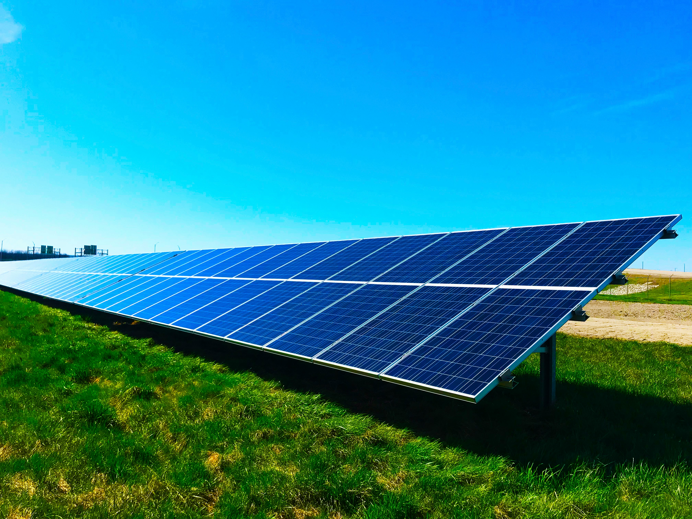

Solar Energy
Solar energy, harnessed from the sun's rays, stands as one of the most abundant and renewable sources of power available to humanity. Through the utilization of photovoltaic cells, solar panels convert sunlight directly into electricity, offering a clean and sustainable alternative to traditional fossil fuels. The process involves the absorption of sunlight by the photovoltaic cells, which generate an electric current through the photovoltaic effect. This electricity can then be utilized to power homes, businesses, and even entire cities.
One of the most significant advantages of solar energy lies in its environmental friendliness. Unlike fossil fuels, solar energy production generates minimal greenhouse gas emissions, thereby mitigating the harmful effects of climate change and reducing our reliance on finite resources. Furthermore, solar panels require little maintenance and have a long lifespan, making them a cost-effective solution for both individuals and communities seeking energy independence.
In addition to its environmental benefits, solar energy offers economic advantages as well. As technology advances and production costs decrease, solar power becomes increasingly affordable and accessible to a broader spectrum of society. Governments and organizations worldwide are implementing incentives and subsidies to encourage the adoption of solar energy, further driving its widespread acceptance and integration into mainstream energy systems.
While challenges such as intermittency and storage remain, ongoing research and innovation continue to enhance the efficiency and reliability of solar energy systems. With its immense potential to revolutionize the way we generate and consume electricity, solar energy stands as a beacon of hope in the global transition towards a more sustainable and equitable future.

Solar Panel
Solar panels, also known as photovoltaic (PV) panels, are devices designed to convert sunlight into electricity. They are a key component of solar energy systems and play a crucial role in harnessing renewable energy from the sun. Here's an overview of solar panels:
How Solar Panels Work:
Photovoltaic Effect: Solar panels consist of multiple silicon cells layered between protective materials. When sunlight strikes these cells, it excites electrons within the silicon, creating an electric current—a phenomenon known as the photovoltaic effect.
DC Electricity Generation: The generated electric current is in the form of direct current (DC). This DC electricity is then transferred to an inverter, which converts it into alternating current (AC) electricity suitable for use in homes and businesses.
Integration with Electrical Systems: The AC electricity produced by the solar panels can be used to power appliances, lights, and other electrical devices. Excess electricity can be stored in batteries for later use or fed back into the grid, depending on the system setup and local regulations.
Components of Solar Panels:
Cells: These are the individual units within the solar panel that capture sunlight and generate electricity. Most solar cells are made of silicon, though other materials such as cadmium telluride and thin-film materials are also used.
Glass Cover: Protects the solar cells from environmental factors such as rain, snow, and debris while allowing sunlight to pass through.
Frame: Provides structural support for the solar panel and facilitates installation onto rooftops or mounting structures.
Backsheet: A layer on the back of the solar panel that protects the wiring and cells from moisture and other environmental factors.
Types of Solar Panels:
Solar Panels: Made from a single crystal structure, monocrystalline panels are known for their high efficiency and sleek black appearance.
Polycrystalline Solar Panels: Constructed from multiple silicon fragments, polycrystalline panels are less expensive to produce but typically have slightly lower efficiency compared to monocrystalline panels.
Thin-Film Solar Panels: These panels use thin layers of photovoltaic material applied to a substrate, making them lightweight and flexible. While less efficient than crystalline silicon panels, thin-film panels are often used in applications where weight and flexibility are important, such as portable solar chargers and building-integrated photovoltaics.
Benefits of Solar Panels:
-
1. Energy Source: Solar energy is abundant and inexhaustible, making solar panels a sustainable solution for electricity generation.
2. Friendly: Solar panels produce electricity without emitting greenhouse gases or pollutants, contributing to reduced carbon emissions and cleaner air.
3. Energy Independence: By generating their own electricity, solar panel owners can reduce their reliance on fossil fuels and centralized power grids, providing greater energy security and autonomy.
4. Savings: While the initial cost of installing solar panels can be significant, they offer long-term savings on electricity bills and may increase the value of the property.
5. Low Maintenance: Solar panels require minimal maintenance and have a lifespan of 25 years or more, making them a reliable and cost-effective investment.
In summary, solar panels offer a sustainable and environmentally friendly solution for electricity generation, helping to mitigate climate change and promote energy independence. As technology advances and production costs decrease, solar energy continues to play an increasingly significant role in the global transition to clean and renewable energy sources.
Solar Panel Installation
Solar panel installation is a pivotal process that requires careful planning, expertise, and adherence to safety guidelines. The installation begins with a thorough assessment of the site's solar potential, considering factors such as sun exposure, shading, and structural integrity. Roof orientation and tilt angles are evaluated to optimize sunlight absorption throughout the day.
Once the site assessment is complete, the installation team prepares the mounting structure, typically using rails or brackets securely attached to the roof. These mounting systems ensure proper alignment and stability for the solar panels. Roof penetrations are sealed to prevent water leaks and ensure the integrity of the roofing material.
Next, the solar panels are positioned and secured onto the mounting structure, with meticulous attention to spacing and alignment. Wiring and electrical connections are carefully routed and installed to link the solar panels to the inverter and electrical panel. Proper wiring ensures efficient energy transfer and compliance with local electrical codes.
After the physical installation is complete, thorough testing and commissioning are conducted to verify the functionality and performance of the solar energy system. This includes checking voltage levels, monitoring for potential issues, and ensuring safety features are functioning correctly.
In addition to the technical aspects, solar panel installation often involves paperwork and permits to comply with local regulations and utility requirements. This may include obtaining building permits, interconnection agreements with the utility company, and securing any applicable incentives or rebates.
Overall, solar panel installation represents a significant step towards harnessing clean and renewable energy. When executed with precision and attention to detail, it enables homeowners and businesses to reduce their carbon footprint, lower energy costs, and contribute to a more sustainable future.
Solar Panel Efficiency
Solar panel efficiency is a critical aspect of photovoltaic technology, dictating the amount of sunlight that can be converted into usable electricity. Efficiency measures the panel's ability to convert sunlight into electrical energy and is typically represented as a percentage. High-efficiency solar panels can generate more electricity per square meter of space, making them desirable for maximizing energy production in limited areas.
Advancements in solar panel technology have led to increased efficiency levels, with modern panels boasting efficiencies upwards of 20% or more. This efficiency improvement stems from innovations in materials, manufacturing processes, and cell designs. Monocrystalline silicon panels, known for their high efficiency, utilize single-crystal silicon cells to achieve greater conversion rates compared to polycrystalline or thin-film alternatives.
Efficiency gains translate to several benefits for solar panel owners. Firstly, higher efficiency panels require fewer installations to generate the same amount of electricity, reducing overall system costs and maximizing energy output. Additionally, in areas with limited roof space or challenging installation conditions, high-efficiency panels offer a viable solution for maximizing energy production within constrained environments.
However, it's essential to consider the balance between efficiency and cost when selecting solar panels for a specific application. While high-efficiency panels offer superior performance, they often come with a higher upfront cost compared to standard panels. Therefore, it's crucial to assess the return on investment over the panel's lifespan to determine the most cost-effective solution for your energy needs.
Solar Panel Maintenance Tips
1. Regular Cleaning: Keep the solar panels clean by washing them with water and a mild detergent. Use a soft brush or sponge to remove dirt, dust, bird droppings, and other debris that may accumulate on the panels. Clean the panels at least once every few months, or more frequently if you live in a dusty area.
2. Check for Shading: Regularly inspect the area around your solar panels to ensure there are no obstructions causing shading. Trim back overhanging branches, remove leaves, and clear away any debris that may cast shadows on the panels. Shading can significantly reduce the energy output of solar panels.
3. Monitor Performance: Keep track of the performance of your solar panel system by monitoring its energy production regularly. Many solar inverters come with monitoring systems that allow you to track the energy generated by your panels. Monitoring helps identify any issues or declines in performance early on.
4. Inspect for Damage: Periodically inspect the solar panels for signs of damage, such as cracks, chips, or discoloration. Check the mounting hardware, frames, and seals for signs of wear or corrosion. If you notice any damage, contact a professional solar panel technician for repairs.
5. Check Electrical Connections: Ensure that all electrical connections are secure and free of corrosion. Loose or damaged connections can lead to reduced efficiency or electrical hazards. If you're not comfortable working with electrical components, hire a qualified electrician to inspect and maintain the electrical system of your solar panels.
6. Protect Against Pests: Install bird or rodent deterrents to prevent birds, squirrels, and other animals from nesting under or on top of your solar panels. Birds and rodents can damage the wiring and cause issues with the panels' performance.
7. Perform Seasonal Maintenance: Consider performing seasonal maintenance on your solar panels to prepare them for changes in weather conditions. In colder climates, remove snow accumulation from the panels to maximize sunlight absorption. In warmer climates, check for signs of overheating and ensure proper ventilation.
Environmental Benefits of Solar Energy
1. Reduction in Greenhouse Gas Emissions: One of the most significant environmental benefits of solar energy is its ability to reduce greenhouse gas emissions. Unlike fossil fuels such as coal, oil, and natural gas, solar energy generation does not produce harmful pollutants like carbon dioxide (CO2), sulfur dioxide (SO2), and nitrogen oxides (NOx) that contribute to air pollution and climate change.
2. Clean and Renewable Energy Source: Solar energy is a clean and renewable energy source that harnesses the power of sunlight to generate electricity. Unlike finite fossil fuels, sunlight is abundant and inexhaustible, making solar energy a sustainable solution for meeting our energy needs without depleting natural resources or harming the environment.
3. Conservation of Natural Resources: Solar energy helps conserve natural resources by reducing our reliance on non-renewable resources such as coal, oil, and natural gas. By generating electricity from sunlight, we can decrease the need for extracting, transporting, and burning fossil fuels, which can have detrimental effects on ecosystems, water resources, and biodiversity.
4. Reduced Water Usage: Unlike traditional power plants that require large amounts of water for cooling and steam generation, solar photovoltaic (PV) systems and concentrated solar power (CSP) plants consume minimal water during operation. This helps conserve water resources and reduces the strain on freshwater ecosystems, especially in regions prone to water scarcity and drought.
5. Mitigation of Urban Heat Islands: Solar panels installed on rooftops and in urban areas can help mitigate the urban heat island effect by shading buildings and reducing surface temperatures. By absorbing sunlight and converting it into electricity, solar panels can lower the demand for air conditioning and reduce the heat absorbed by buildings, streets, and sidewalks, thereby improving urban comfort and reducing energy consumption.
6. Enhancement of Air Quality: By displacing conventional fossil fuel-based power generation, solar energy contributes to improved air quality and public health. Reduced emissions of air pollutants such as particulate matter (PM), sulfur dioxide (SO2), and nitrogen oxides (NOx) can lead to cleaner air and fewer respiratory and cardiovascular illnesses associated with air pollution.
7. Promotion of Sustainable Development: Solar energy promotes sustainable development by fostering economic growth, creating green jobs, and empowering communities to adopt clean and affordable energy solutions. Investments in solar energy infrastructure contribute to energy security, energy independence, and the transition to a low-carbon economy, benefiting both present and future generations.